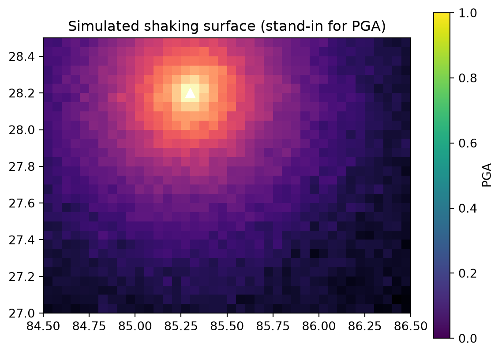
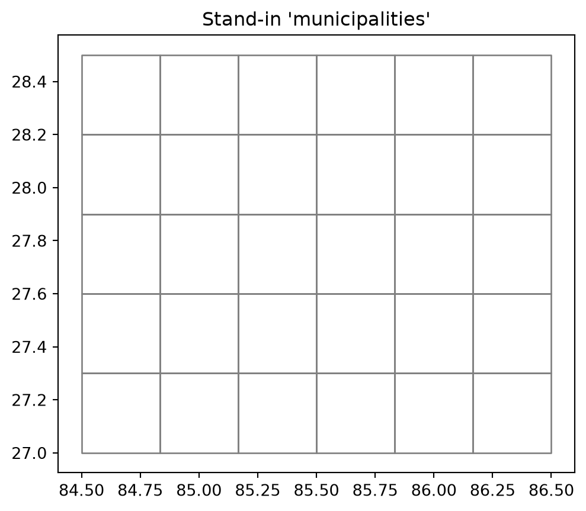
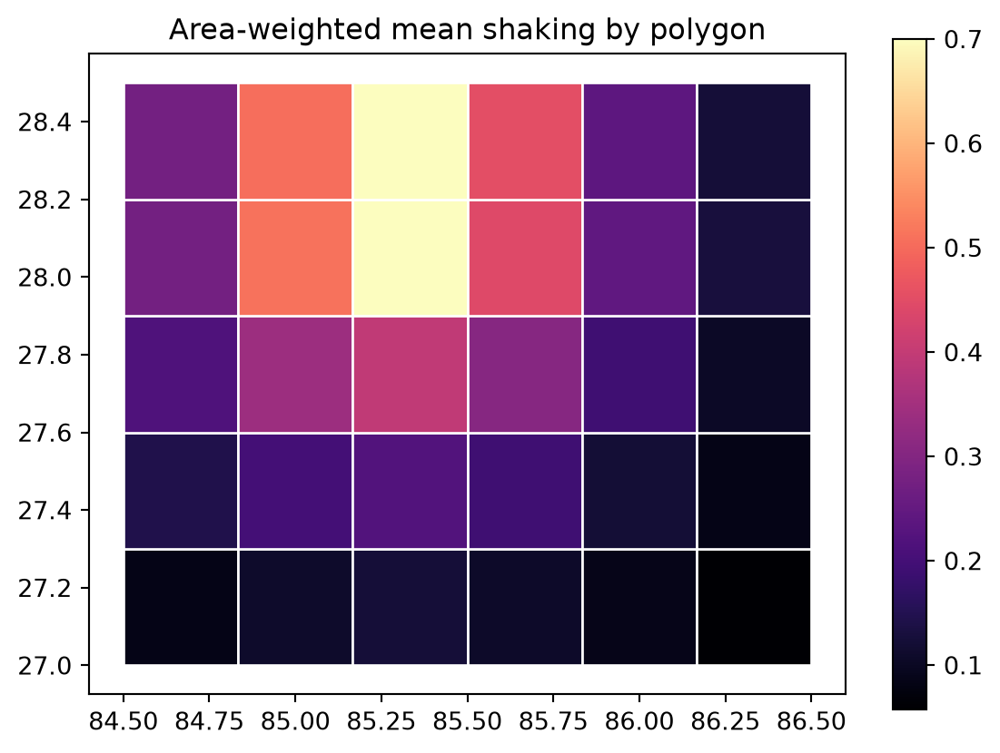

Code
import numpy as np
import rasterio
from rasterio.transform import from_origin
import geopandas as gpd
from shapely.geometry import box
from exactextract import exact_extract
from rasterstats import zonal_stats
import matplotlib.pyplot as pltAbhishek Baraili
June 24, 2026
I’ve spent the last few weeks trying to get a causal inference project off the ground, and this post is really about a small, dumb-sounding problem that held me up at the very first step. It’s the kind of thing nobody writes down because it feels too basic, right up until you’re the one stuck on it.
The project, briefly: I want to use how hard the ground shook during the 2015 Gorkha earthquake as an instrument. Shaking intensity is plausibly exogenous to the things that usually confound development outcomes. It’s set by geology and distance to the fault rupture, not by how rich or well-governed a place was beforehand, and that is exactly the property you want in an instrument. The outcome I care about is on the other side of it: whether places that shook harder fragmented in ways that mattered for shared infrastructure recovery.
But before any of that, a wall. The shaking data from USGS comes as a raster, a grid of cells where each one holds a value. My unit of analysis is the municipality, one of Nepal’s 753 local governments, which is an irregular polygon. So I had a grid on one side and a set of polygons on the other, and I needed a single shaking number for each polygon before I could run a single regression. I work mostly in Stata, and Stata was no help at all here. It has no real sense of a raster. So I went to Python, and this is what I learned.
The operation has a name, zonal statistics, and on the surface it sounds trivial: for each polygon, summarize the cells inside it. Take the mean. Done.
Except a municipality boundary does not politely run along the edges of raster cells. It slices straight through them. A given cell might sit 80% inside one municipality and 20% inside the next. And the obvious, lazy way to handle this, which is to assign each cell wholesale to whichever polygon its centre falls in, quietly throws that fractional information away.
For a while I didn’t think this mattered. Then it occurred to me why it should worry me specifically. My raster is coarse relative to my polygons. A ShakeMap grid cell is large next to a small hill municipality, which is the exact regime where that centre-of-cell rounding introduces the most error. And the variable it’s corrupting isn’t a control. It’s my instrument. Classical measurement error in an instrument attenuates the first stage. So the sloppiness I was about to wave through would land precisely where I could least afford it. That was the moment I stopped and did this properly.
The fix is area-weighted extraction: for every cell, compute the fraction of its area inside each polygon, and weight by that. In Python the tool that does this is exactextract. The more common rasterstats is fine and I’ll use it for comparison, but its default is the all-or-nothing assignment I just talked myself out of.
To keep this honest and reproducible, I’m not going to run it on the real Gorkha ShakeMap here. I don’t want to put half-finished numbers from my actual instrument on the internet. Instead I’ll build a fake shaking surface, show the method on that, and then point at the two lines you’d change to run it for real.
First, a stand-in for the shaking field. I make a grid over a central-Nepal-ish box and fill it with a value that decays away from a made-up epicentre, so it looks roughly like peak ground acceleration without pretending to be the real thing.
res = 0.05
xmin, xmax, ymin, ymax = 84.5, 86.5, 27.0, 28.5
width = int(round((xmax - xmin) / res))
height = int(round((ymax - ymin) / res))
transform = from_origin(xmin, ymax, res, res)
xs = xmin + (np.arange(width) + 0.5) * res
ys = ymax - (np.arange(height) + 0.5) * res
xx, yy = np.meshgrid(xs, ys)
epi = (85.3, 28.2)
dist = np.sqrt((xx - epi[0])**2 + (yy - epi[1])**2)
rng = np.random.default_rng(42)
pga = (np.exp(-dist * 2) + rng.normal(0, 0.02, dist.shape)).astype("float32")
with rasterio.open(
"sim_pga.tif", "w", driver="GTiff",
height=height, width=width, count=1, dtype="float32",
crs="EPSG:4326", transform=transform,
) as dst:
dst.write(pga, 1)
plt.imshow(pga, extent=[xmin, xmax, ymin, ymax], origin="upper", cmap="magma")
plt.scatter(*epi, marker="^", c="white", s=60)
plt.title("Simulated shaking surface (stand-in for PGA)")
plt.colorbar(label="PGA");
Now the polygons. In the real thing these are the 753 municipalities; here I just chop the box into a coarse 6×5 fishnet, deliberately so the grid lines don’t match up with the raster cells, because otherwise the whole point disappears.
nx, ny = 6, 5
cw, ch = (xmax - xmin) / nx, (ymax - ymin) / ny
polys, ids, k = [], [], 1
for j in range(ny):
for i in range(nx):
x0, y0 = xmin + i * cw, ymin + j * ch
polys.append(box(x0, y0, x0 + cw, y0 + ch))
ids.append(f"M{k:02d}")
k += 1
grid = gpd.GeoDataFrame({"muni_id": ids, "geometry": polys}, crs="EPSG:4326")
grid.plot(facecolor="none", edgecolor="grey")
plt.title("Stand-in 'municipalities'");
Before extracting anything, the polygons and the raster have to be in the same coordinate reference system (CRS). If they aren’t, you don’t get an error. You get silent nonsense, all-NaN columns or numbers that look almost plausible, because the two layers are describing the same patch of earth in incompatible coordinates and never actually overlap. This is, as far as I can tell, the single most common way this whole exercise quietly fails. So: reproject the polygons to the raster’s CRS, and check it before trusting anything downstream.
grid CRS : GEOGCS["WGS 84",DATUM["WGS_1984",SPHEROID["WGS 84",6378137,298.257223563,AUTHORITY["EPSG","7030"]],AUTHORITY["EPSG","6326"]],PRIMEM["Greenwich",0,AUTHORITY["EPSG","8901"]],UNIT["degree",0.0174532925199433,AUTHORITY["EPSG","9122"]],AXIS["Latitude",NORTH],AXIS["Longitude",EAST],AUTHORITY["EPSG","4326"]]
raster CRS: EPSG:4326With everything lined up, the area-weighted summary is a single call.
| muni_id | mean | max | |
|---|---|---|---|
| 20 | M21 | 0.700171 | 0.947278 |
| 26 | M27 | 0.698187 | 0.951787 |
| 19 | M20 | 0.510335 | 0.755217 |
| 25 | M26 | 0.506040 | 0.765271 |
| 27 | M28 | 0.451657 | 0.648415 |
| 21 | M22 | 0.443726 | 0.656842 |
| 14 | M15 | 0.395736 | 0.597168 |
| 13 | M14 | 0.339124 | 0.588077 |
Worth a sanity check before believing it: the two highest-shaking polygons should be the ones sitting on top of the epicentre, and they are. That’s the kind of check I’ve learned not to skip. If the polygons with the highest assigned shaking weren’t the ones nearest the fake epicentre, something in the mapping would be scrambled and I’d want to know now, not three regressions later.
The mean is genuinely area-weighted: a cell 30% inside a polygon contributes 30% of its weight. For the real instrument I’ll probably keep both the mean (average exposure) and the max (worst shaking a place felt) and see which behaves better in the first stage. I don’t have a strong prior on that yet.
So how much does the area-weighting actually buy me over the lazy version? Let’s check, rather than assume.
mean absolute difference: 0.0017
max absolute difference: 0.0055On this grid, not much. The gap is tiny. But that’s because I made the raster fine relative to the polygons. The gap grows as the raster gets coarse relative to the units, and a real ShakeMap grid over small hill municipalities is about as coarse-over-small as it gets. So I’m not doing the area-weighting because it visibly changes this toy example. I’m doing it because in the real case it’s the version I can defend, and the cost of doing it right is one function call.
One last look, the result mapped back onto the polygons:

You can see the aggregation for what it is: the smooth surface from the top of the post collapsed into one blocky value per polygon. That blockiness is the whole job: turning a continuous field into something I can merge onto a dataset and regress.
For the actual project only two lines change. The raster becomes the ShakeMap grid for the Gorkha event (USGS us20002926, from the ShakeMap Atlas v4), and the polygons become the 753 municipalities.
# real inputs, not run here
import geopandas as gpd
from exactextract import exact_extract
munis = gpd.read_file("nepal_municipalities_753.gpkg")
with rasterio.open("shakemap_us20002926_pga.tif") as src:
munis = munis.to_crs(src.crs)
result = exact_extract(
"shakemap_us20002926_pga.tif", munis, ["mean", "max"],
output="pandas", include_cols=["muni_id"],
)
result.to_csv("muni_shaking.csv", index=False) # this goes straight into StataAnd that muni_shaking.csv is the bridge: a surface published by seismologists, turned into a municipality-level column I can merge in Stata, where the rest of the project lives.
I went in thinking the hard part of an instrument is the identification argument, the story about why shaking is exogenous. That part is hard. But I’d half-assumed the measurement was plumbing. It isn’t. If shaking is going to do the identification work, then how faithfully I map that grid onto municipalities is the instrument, and a lazy mean would have quietly weakened my first stage before I’d written a line of the actual model. The code here is short. Being careful about it is the part that actually matters, and it’s the part I almost skipped.
Next, I want to take this municipality-level shaking into a first stage and see whether it’s strong enough to be worth anything, and figure out what a sensible placebo looks like. That’s the post I actually want to write. This one was just me getting to the start line.
---
title: "How do I turn an earthquake into one number per municipality?"
author: "Abhishek Baraili"
date: "2026-06-24"
description: "Turning a grid of earthquake shaking values into one number per municipality, with zonal statistics in Python."
categories: [Python, causal inference, spatial, Nepal]
jupyter: python3
format:
html:
toc: true
toc-depth: 2
code-fold: show
code-tools: true
theme: cosmo
fig-width: 7
fig-height: 5
execute:
warning: false
---
I've spent the last few weeks trying to get a causal inference project off the
ground, and this post is really about a small, dumb-sounding problem that held me
up at the very first step. It's the kind of thing nobody writes down because it
feels too basic, right up until you're the one stuck on it.
The project, briefly: I want to use how hard the ground shook during the 2015
Gorkha earthquake as an instrument. Shaking intensity is plausibly exogenous to the
things that usually confound development outcomes. It's set by geology and distance
to the fault rupture, not by how rich or well-governed a place was beforehand, and
that is exactly the property you want in an instrument. The outcome I care about is
on the other side of it: whether places that shook harder fragmented in ways that
mattered for shared infrastructure recovery.
But before any of that, a wall. The shaking data from USGS comes as a **raster**,
a grid of cells where each one holds a value. My unit of analysis is the
**municipality**, one of Nepal's 753 local governments, which is an irregular
polygon. So I had a grid on one side and a set of polygons on the other, and I
needed a single shaking number for each polygon before I could run a single
regression. I work mostly in Stata, and Stata was no help at all here. It has no
real sense of a raster. So I went to Python, and this is what I learned.
## The thing I almost got wrong
The operation has a name, **zonal statistics**, and on the surface it sounds
trivial: for each polygon, summarize the cells inside it. Take the mean. Done.
Except a municipality boundary does not politely run along the edges of raster
cells. It slices straight through them. A given cell might sit 80% inside one
municipality and 20% inside the next. And the obvious, lazy way to handle this,
which is to assign each cell wholesale to whichever polygon its *centre* falls in,
quietly throws that fractional information away.
For a while I didn't think this mattered. Then it occurred to me *why* it should
worry me specifically. My raster is coarse relative to my polygons. A ShakeMap grid
cell is large next to a small hill municipality, which is the exact regime where
that centre-of-cell rounding introduces the most error. And the variable it's
corrupting isn't a control. It's my instrument. Classical measurement error in an
instrument attenuates the first stage. So the sloppiness I was about to wave through
would land precisely where I could least afford it. That was the moment I stopped
and did this properly.
The fix is **area-weighted** extraction: for every cell, compute the fraction of its
area inside each polygon, and weight by that. In Python the tool that does this is
`exactextract`. The more common `rasterstats` is fine and I'll use it for comparison,
but its default is the all-or-nothing assignment I just talked myself out of.
## Setting it up
To keep this honest and reproducible, I'm *not* going to run it on the real Gorkha
ShakeMap here. I don't want to put half-finished numbers from my actual instrument
on the internet. Instead I'll build a fake shaking surface, show the method on that,
and then point at the two lines you'd change to run it for real.
```{python}
#| label: setup
import numpy as np
import rasterio
from rasterio.transform import from_origin
import geopandas as gpd
from shapely.geometry import box
from exactextract import exact_extract
from rasterstats import zonal_stats
import matplotlib.pyplot as plt
```
First, a stand-in for the shaking field. I make a grid over a central-Nepal-ish box
and fill it with a value that decays away from a made-up epicentre, so it looks
roughly like peak ground acceleration without pretending to be the real thing.
```{python}
#| label: simulate-raster
res = 0.05
xmin, xmax, ymin, ymax = 84.5, 86.5, 27.0, 28.5
width = int(round((xmax - xmin) / res))
height = int(round((ymax - ymin) / res))
transform = from_origin(xmin, ymax, res, res)
xs = xmin + (np.arange(width) + 0.5) * res
ys = ymax - (np.arange(height) + 0.5) * res
xx, yy = np.meshgrid(xs, ys)
epi = (85.3, 28.2)
dist = np.sqrt((xx - epi[0])**2 + (yy - epi[1])**2)
rng = np.random.default_rng(42)
pga = (np.exp(-dist * 2) + rng.normal(0, 0.02, dist.shape)).astype("float32")
with rasterio.open(
"sim_pga.tif", "w", driver="GTiff",
height=height, width=width, count=1, dtype="float32",
crs="EPSG:4326", transform=transform,
) as dst:
dst.write(pga, 1)
plt.imshow(pga, extent=[xmin, xmax, ymin, ymax], origin="upper", cmap="magma")
plt.scatter(*epi, marker="^", c="white", s=60)
plt.title("Simulated shaking surface (stand-in for PGA)")
plt.colorbar(label="PGA");
```
Now the polygons. In the real thing these are the 753 municipalities; here I just
chop the box into a coarse 6×5 fishnet, deliberately so the grid lines *don't* match
up with the raster cells, because otherwise the whole point disappears.
```{python}
#| label: simulate-polygons
nx, ny = 6, 5
cw, ch = (xmax - xmin) / nx, (ymax - ymin) / ny
polys, ids, k = [], [], 1
for j in range(ny):
for i in range(nx):
x0, y0 = xmin + i * cw, ymin + j * ch
polys.append(box(x0, y0, x0 + cw, y0 + ch))
ids.append(f"M{k:02d}")
k += 1
grid = gpd.GeoDataFrame({"muni_id": ids, "geometry": polys}, crs="EPSG:4326")
grid.plot(facecolor="none", edgecolor="grey")
plt.title("Stand-in 'municipalities'");
```
## The bug that wastes everyone's afternoon
Before extracting anything, the polygons and the raster have to be in the same
coordinate reference system (CRS). If they aren't, you don't get an error. You get
silent nonsense, all-`NaN` columns or numbers that look almost plausible, because the
two layers are describing the same patch of earth in incompatible coordinates and
never actually overlap. This is, as far as I can tell, the single most common way
this whole exercise quietly fails. So: reproject the polygons to the raster's CRS,
and check it before trusting anything downstream.
```{python}
#| label: align-crs
with rasterio.open("sim_pga.tif") as src:
raster_crs = src.crs
grid = grid.to_crs(raster_crs)
print("grid CRS :", grid.crs)
print("raster CRS:", raster_crs)
```
## Extracting
With everything lined up, the area-weighted summary is a single call.
```{python}
#| label: extract
out = exact_extract(
"sim_pga.tif", grid, ["mean", "max"],
output="pandas", include_cols=["muni_id"],
)
out.sort_values("mean", ascending=False).head(8)
```
Worth a sanity check before believing it: the two highest-shaking polygons should be
the ones sitting on top of the epicentre, and they are. That's the kind of check I've
learned not to skip. If the polygons with the highest assigned shaking *weren't* the
ones nearest the fake epicentre, something in the mapping would be scrambled and I'd
want to know now, not three regressions later.
The `mean` is genuinely area-weighted: a cell 30% inside a polygon contributes 30% of
its weight. For the real instrument I'll probably keep both the mean (average
exposure) and the max (worst shaking a place felt) and see which behaves better in
the first stage. I don't have a strong prior on that yet.
So how much does the area-weighting actually buy me over the lazy version? Let's
check, rather than assume.
```{python}
#| label: compare
rs = zonal_stats(grid, "sim_pga.tif", stats=["mean"], nodata=-999)
rs_mean = np.array([r["mean"] for r in rs])
diff = np.abs(out["mean"].to_numpy() - rs_mean)
print(f"mean absolute difference: {np.nanmean(diff):.4f}")
print(f"max absolute difference: {np.nanmax(diff):.4f}")
```
On this grid, not much. The gap is tiny. But that's because I made the
raster fine relative to the polygons. The gap grows as the raster gets coarse
relative to the units, and a real ShakeMap grid over small hill municipalities is
about as coarse-over-small as it gets. So I'm not doing the area-weighting because it
visibly changes *this* toy example. I'm doing it because in the real case it's the
version I can defend, and the cost of doing it right is one function call.
One last look, the result mapped back onto the polygons:
```{python}
#| label: map-result
grid = grid.merge(out[["muni_id", "mean"]], on="muni_id")
grid.plot(column="mean", cmap="magma", edgecolor="white", legend=True)
plt.title("Area-weighted mean shaking by polygon");
```
You can see the aggregation for what it is: the smooth surface from the top of the
post collapsed into one blocky value per polygon. That blockiness is the whole job:
turning a continuous field into something I can merge onto a dataset and regress.
## Doing it for real
For the actual project only two lines change. The raster becomes the ShakeMap grid
for the Gorkha event (USGS `us20002926`, from the ShakeMap Atlas v4), and the
polygons become the 753 municipalities.
```python
# real inputs, not run here
import geopandas as gpd
from exactextract import exact_extract
munis = gpd.read_file("nepal_municipalities_753.gpkg")
with rasterio.open("shakemap_us20002926_pga.tif") as src:
munis = munis.to_crs(src.crs)
result = exact_extract(
"shakemap_us20002926_pga.tif", munis, ["mean", "max"],
output="pandas", include_cols=["muni_id"],
)
result.to_csv("muni_shaking.csv", index=False) # this goes straight into Stata
```
And that `muni_shaking.csv` is the bridge: a surface published by seismologists,
turned into a municipality-level column I can `merge` in Stata, where the rest of the
project lives.
## What I take from this
I went in thinking the hard part of an instrument is the identification argument,
the story about why shaking is exogenous. That part is hard. But I'd half-assumed the
measurement was plumbing. It isn't. If shaking is going to do the identification
work, then how faithfully I map that grid onto municipalities *is* the instrument,
and a lazy mean would have quietly weakened my first stage before I'd written a line
of the actual model. The code here is short. Being careful about it is the part that
actually matters, and it's the part I almost skipped.
Next, I want to take this municipality-level shaking into a first stage and see
whether it's strong enough to be worth anything, and figure out what a sensible
placebo looks like. That's the post I actually want to write. This one was just me
getting to the start line.